| 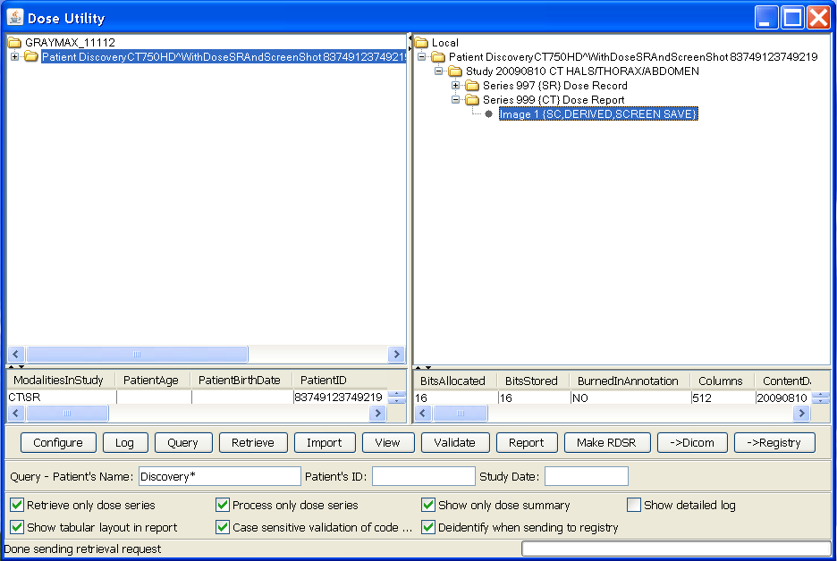 |
DoseUtility is a free open source tool with a user interface to query, retrieve, import, and extract and report radiation dose information. It is written in pure Java, will run on any platform and can be started from the web without local installation. It can:
Having configured the network targets appropriately (see below), one can enter various query keys and obtain from the PACS a list of studies for one or more patients, which will be displayed as a tree in the left panel.
One can then select either everything returned by the query (top node in the tree), or a single study or series to retrieve. Initially, one may leave the "Retrieve only dose series" box checked to reduce the volume of material retrieved.
The retrieved instances will be listed in the right panel, and can be explored by expanding the tree.
The following example shows a CT study that contains not only a dose screen save image, but also a radiation dose report.
If any GE or Siemens or Toshiba or Philips CT Dose screen save images are present, one can select the image and press the View button to show its contents. The GE dose screens are usually in Series 999; the Siemens dose screens are usually in Series 501; the Toshiba dose screens may be in Series 1000, or in any series (and hence can be hard to find), and may span multiple pages (multiple images); the Philips dose screens are usually in Series 1 and have a Series Description of "Dose Info", though sometimes the dose screen is absent and the dose information is present inside the localizer.
| 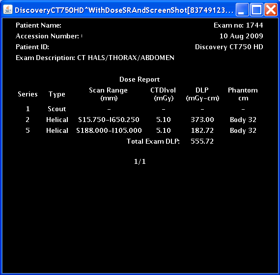 |
One can also press the Report button to perform OCR or process the "header" as required, and extract the information in a tabular form in a new popup window. The "Show only dose summary" checkbox can be turned off prior to pressing Report in order to show the per-series information, as in the following screenshot:
| 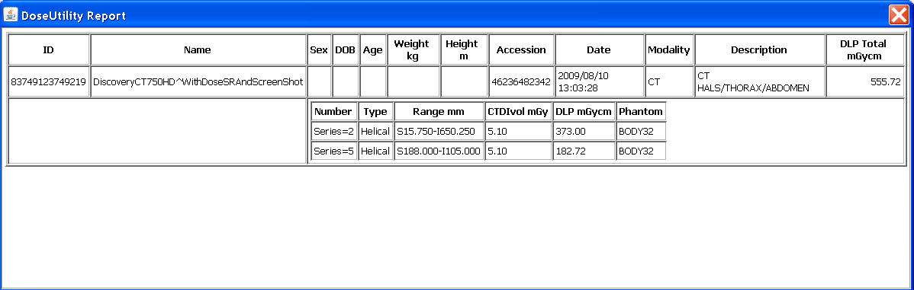 |
Reports about multiple studies can be generated at the same time if one selects higher in the tree in the right panel, as in the following screenshot:
 |
Note that when entire patients or studies are selected, and the studies contain both dose screens and RDSRs (whether generated by the modality, or this tool), then there will be multiple entries in the resulting report.
Detailed information about the acquisition parameters related to dose that is not included in the dose screen save or its header can be obtained if one unchecks the "Retrieve only dose series" box, then retrieves the entire set of CT images for the studies, and then generates the report again after unchecking the "Process only dose series" box ... this will be slower, of course, but results in more complete information, similar to what one might find in a Radiation Dose SR report. This may also help if the query is unable to find any dose screens using the series level information (e.g., if dose screens have been lumped into series with localizers, or the PACS database has coerced the series level description into something unexpected).
A textual rather than tabular form of report may be obtained by unchecking the "Show tabular layout in report" checkbox. The tabular form is implemented using HTML tables, and can be cut-and-pasted into other tools using mouse selection and the conventional key board shortcuts for the platform (e.g., ctrl-A, ctrl-C, ctrl-V for Windows to cut-and-paste everything).
Any SR instances present, including Radiation Dose SR instances, are also retrieved, even when the "Retrieve only dose series" box is checked, and will be listed in the right panel, and can be explored by expanding the tree.
Their contents will be included in the output of the Report button. E.g., if there is both an RDSR and a Dose Screen, then the information from both will be reported.
The more detailed structured content may be explored by pressing the View button, which will pop up a hierarchical tree browser of the content.
| 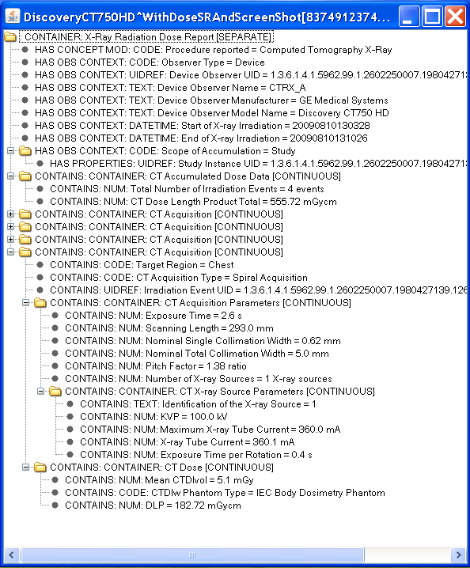 |
The RDSR structure and contents may be validated by pressing the Validate button. For illustrative purposes, this example shows a prototype SR file that is not correct and is encoded in an Enhanced SR SOP Class rather than the Radiation Dose SR SOP Class:
| 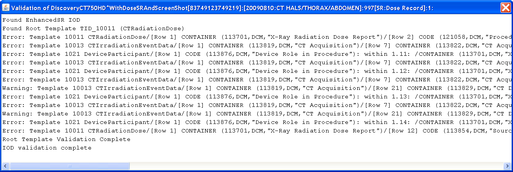 |
Whether or not the validation is case-sensitive with respect to checking code meanings can be controlled by a checkbox. This is sometimes useful to reduce the verbosity of the output caused by variations in the capitalization of the word "X-Ray" (see DICOM CP 1069).
Radiation Dose SR files can be generated from the extracted dose information for the selected patient, study, series or dose screen instance with the "Make RDSR" button.
The amount of information included (and hence the validity of the resulting object), will depend on whether or not the "Process only dose series" box is selected and the level of the selection in the tree. Unchecking this box and selecting at the Study level or higher will generate include as much information as possible, including the required technique information for each acquisition extracted from the axial images.
The resulting RDSR instances will be added as a new Series 897 with a description of "Radiation Dose Information".
Any existing RDSR instances (whether from the modality, created by another application, or generated by this tool) will be ignored during this process.
RDSR files (whether from the modality, created by another application, or generated by this tool) for the entire database or the selected patient, study, series or dose screen instances can be submitted to a pre-configured Dose Registry with the "->Registry" button.
By default, these are de-identified as they are being sent, which means that patient identity information such as names and medical record numbers are removed. The UIDs, device identity and institution identity are preserved, since registries track by facility and device and need to be able to detect duplicate submissions. A check-box allows the de-identification to be turned off if appropriate (e.g., submitting to a service such as an EHR that tracks patient exposure over time).
RDSR files can also be sent to a a pre-configured DICOM network storage SCP with the "->Dicom" button, for example to return newly-generated RDSRs back to the PACS from whence the study was retrieved. Only RDSRs are sent, not the images or other objects.
DoseUtility is a Java Web Start (JWS) application that you can run from within a web browser. It runs on any platform that supports Java 1.5 or greater, and does not require any "installation" per se. Just click on the DoseUtility link, and confirm all security requests to run the application. Java must not be disabled in your browser (check browser security settings). If Java is not already installed, you may be prompted to install it or allow automatic installation to proceed. After Java installation, you may need to reload the link to get the application to start. In MacOS Safari, the 'Open "safe" files after downloading' checkbox in Preferences>General must be enabled (otherwise you will have to double-click the JNLP file in the Downloads window).
Whenever you use the web start application, it will automatically check for the latest version on the web site and use that, so you never need to be concerned about upgrading or maintenance.
If you like, you can right-click on the link to save it as a Windows Desktop Shortcut to make it as easy to start up as any other application, but this is not required, since you can always start it from a browser. If you make such a shortcut, you can give it an icon by downloading this Windows icon (.ico) file, and right-clicking the shortcut and selecting its Properties, and browsing to the downloaded .ico file.
| 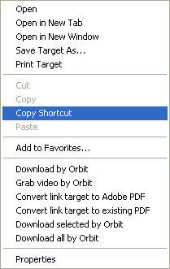 | 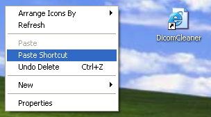 |  |
You can do something similar on the Mac by dragging this link to the Desktop, and can give it an icon using the Get Info (Cmd-I) dialog, renaming the file to "DoseUtility.fileloc" and downloading this PNG file and dragging it on top of the icon in the dialog.
 |
 |
 |
 |
If you want to use a DICOM network (rather than importing from or exporting to folders and files), you can use the "Configure" button to enter information about remote DICOM network devices and the port and AET of the DoseUtility itself.
| 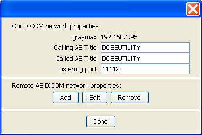 | 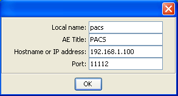 |
This information will be saved in a properties files located in the user's home directory, called ".com.pixelmed.apps.DoseUtility.properties", so that you do not have to re-enter it next time. The property file can also be created or edited manually, though any comments will be lost when the "Configure" button in the user interface is used to update it. The application also supports DNS self-discovery of other DICOM applications, though this is not widely deployed.
After the DICOM configuration information has been entered or edited, another dialog will appear to configure the FTP information of Dose Registries to which RDSRs may be sent. Just press Done if no registries need to be configured, or add the secure FTP parameters as required.
| 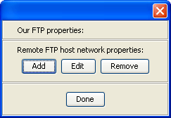 | 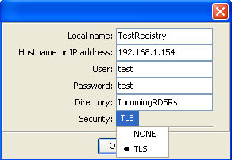 |
If for some reason you do not want to start the application using Java Web Start, but instead want to download it and install it, several versions are available:
The downloaded installable version does NOT automatically update when new versions are released, however.
If you need to report a problem, and want to know what version you are using, look at the status bar immediately after starting the application:
 |
The open source code is contained within the PixelMed toolkit.
The toolkit contains a number of other utilities that may be useful, including:
Click here to start the DoseUtility.
{kind=link}